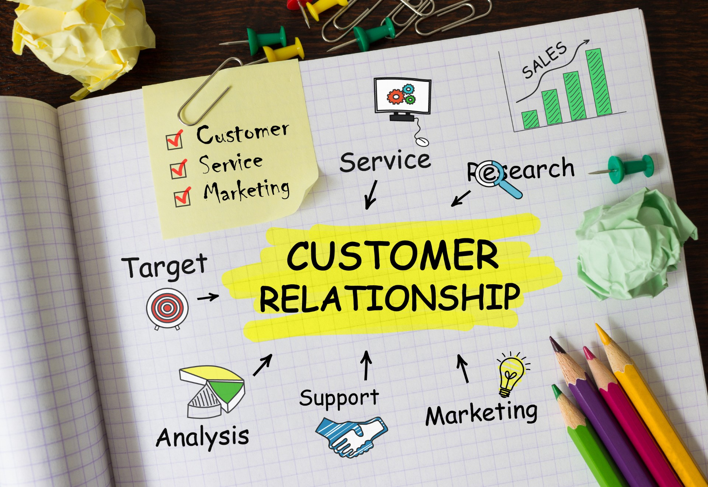

E-COMMERCE PLATFORMS AND TOOLS:
EMPOWERING ONLINE BUSINESS
The world of commerce has witnessed a
monumental shift in recent years, with the rise of
e-commerce platforms and tools. Online
businesses have become an integral part of our
global economy, offering customers the
convenience of shopping from the comfort of their homes.
Read More

CONTENT MARKETING FOR ONLINE SALES:
A COMPREHENSIVE GUIDE
In today's digital age, the landscape of
marketing has shifted dramatically. Traditional advertising methods are no longer as effective
as they once were. Instead, businesses are increasingly turning to content marketing to
boost their online sales.
Read More

MASTERING DIGITAL MARKETING STRATEGIES: A COMPREHENSIVE GUIDE
In the digital age, businesses are constantly
evolving to stay relevant. A core component of this evolution is digital marketing. This comprehensive guide explores the world of digital marketing
strategies, offering insights and tips to help
businesses succeed in the ever-changing online landscape.
Read More

THE IMPACT OF ONLINE SCHOOLING ON TRADITIONAL EDUCATION SYSTEMS
The emergence and widespread adoption of online schooling have significantly transformed the educational landscape.As digital technology
advances, the impact of online schooling on
traditional education systems has become a topic
of increasing importance.
Read More

EXPLORING EMPLOYMENT OPPORTUNITIES
IN BENIN REPUBLIC
Benin Republic, a West African nation, is not only known for its rich culture and history but also
offers a range of employment opportunities for
both locals and expatriates. In this article, we will explore the job market in Benin Republic, including
its economic landscape, employment sectors, education requirements among others.
Read More
CONTENT MARKETING FOR ONLINE SALES:
A COMPREHENSIVE GUIDE
In today's digital age, the landscape of marketing
has shifted dramatically. Traditional advertising methods are no longer as effective as they once
were. Instead, businesses are increasingly turning
to content marketing to boost their online sales.
Read More

E-COMMERCE WEBSITE OPTIMIZATION: UNLEASHING THE POWER OF ONLINE
RETAIL
E-commerce website optimization is the process of fine-tuning your online retail platform to enhance its performance, user experience, and overall effectiveness. It encompasses a variety of
techniques and strategies to attract, engage, and convert visitors into customers.
Read More

CUSTOMER RELATIONSHIP MANAGEMENT (CRM) FOR ONLINE SALES
The advent of e-commerce and the proliferation of online sales channels have brought
new opportunities and challenges for companies looking to build and maintain relationships with their customers.
Read More
STRATEGIES FOR MANAGING STRESS AND ANXIETY IN ONLINE LEARNING
In today's digital age, online learning has become a popular mode of education. Whether you're a
student pursuing an online degree or a professional looking to upskill, the convenience and flexibility of online courses are undeniable.
Read More